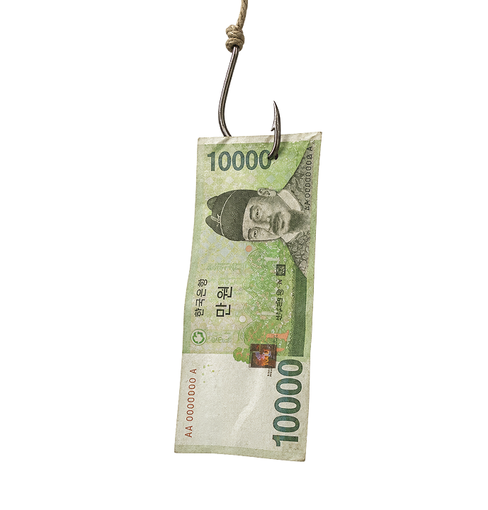
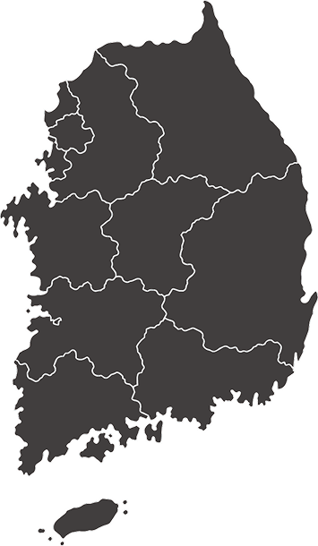
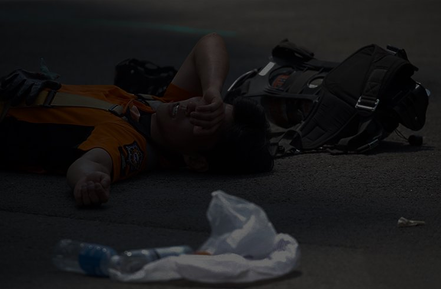

예산의 출발점
중앙과 지방은 예산을 어떻게 나눠 부담할까?

2026년 소방 예산과 지역별 안전 격차를 데이터로
살펴봅시다.
중앙과 지방은 예산을 어떻게 나눠 부담할까?
장비와 근무 여건은 지역별로 어떻게 다를까?
예산 변화는 장비 교체와 인력 운영에 어떤 영향을 줄까?
전국 시·도 소방예산의 재원 구성과 소방청 중앙예산
7조 6,728억 원
9,239억 원
2026년 전국 시·도 소방예산의 89.3%는 지방정부가 부담합니다.
2026년 소방청 예산은 전년보다 증가했습니다. 그러나 중앙정부의 소방청 예산 증가만으로 전국 소방 현장의 재정 상황을 모두 설명할 수는 없습니다. 실제 현장에서는 중앙 예산과 각 지방정부의 소방예산이 서로 다른 방식으로 사용됩니다. 따라서 예산이 얼마나 증가했는지만이 아니라, 그 돈을 누가 부담하고 어디에 집행하는지 함께 살펴봐야 합니다.

지역별 소방예산 격차는 장비 교체, 전문교육, 인력 운영, 복지 지원 등 전반적인 재난 대응 능력의 차이로 이어질 수 있습니다. 특히 복합·대형 재난이 증가하는 상황에서 지역별 대응 기반이 개선되지 않으면, 전국적으로 균등한 소방 서비스를 제공하기 어려워질 수 있습니다.
소방공무원은 늘었지만,
현장의 위험도 줄어들었을까요?
위험직무 순직으로 집계된 인원이며 연평균 3.5명입니다.
위험근무수당 지급
공무상 부상·질병 치료 지원
위험직무 순직 시
유족연금·보상금
직무상 위험보상
부상·장해 시 본인 보호
순직 시 유족 생활 지원
미국: 순직/장애 일시금
스코틀랜드: 최저소득 보장
일본: 고위험 재해 가산
해외는 일부 국가·지역의 사례이며, 적용 대상과 지급 요건이 다릅니다.
돈으로 모든 문제를 해결할 수는 없습니다.
그러나 돈으로 해결해야 하는 문제는 분명히 있습니다.
